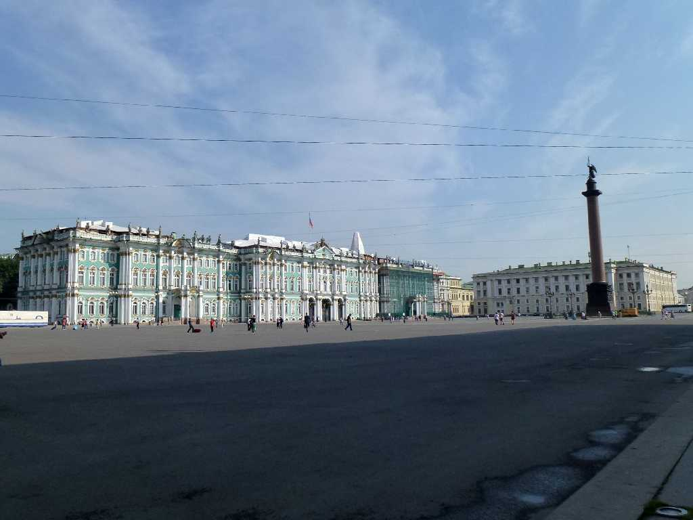
The State Hermitage Museum Winter Palace Sankt Peterburg
８０日間世界一周鉄道の旅で１９日目 世界三大美術館の一つエルミタージュ美術館は１７６２年に創られたロシア帝国の冬宮殿でもある
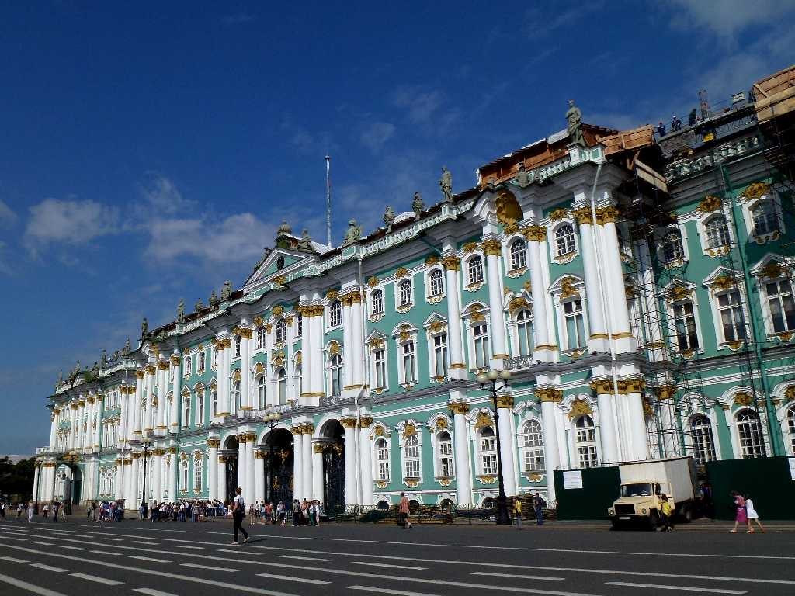
The State Hermitage Museum
１７６４年からエカテリーナⅡ世が美術品を集め始め１７７５年には小エルミタージュを建てコレクションが増え始め更に１７８７年に旧エルミタージュが東隣に増築されたのち１８６３年に市民に公開され自由に鑑賞できるようになった
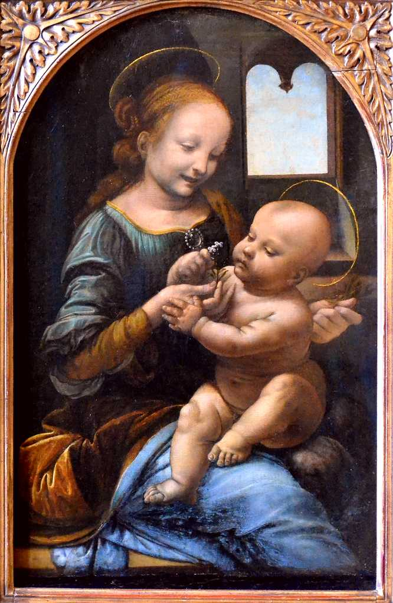 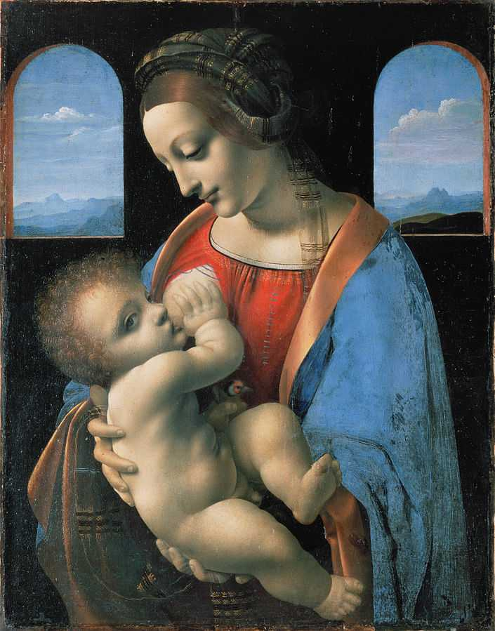
Leonardo da Vinci - Benois Madonna 1478 Madonna Litta 1490
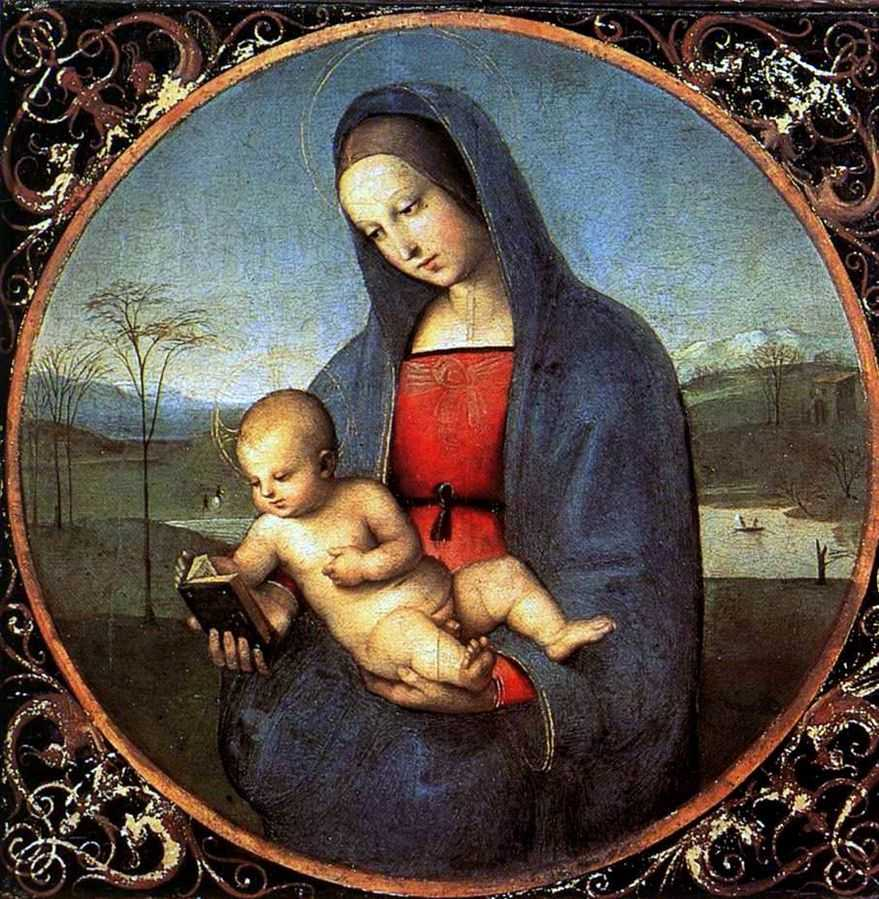 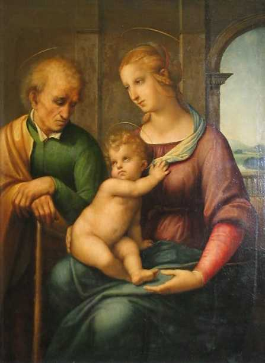
Raffaello - Madonna Connestabile 1504 The Holy Family 1506
Michelangelo - The Crouching Boy
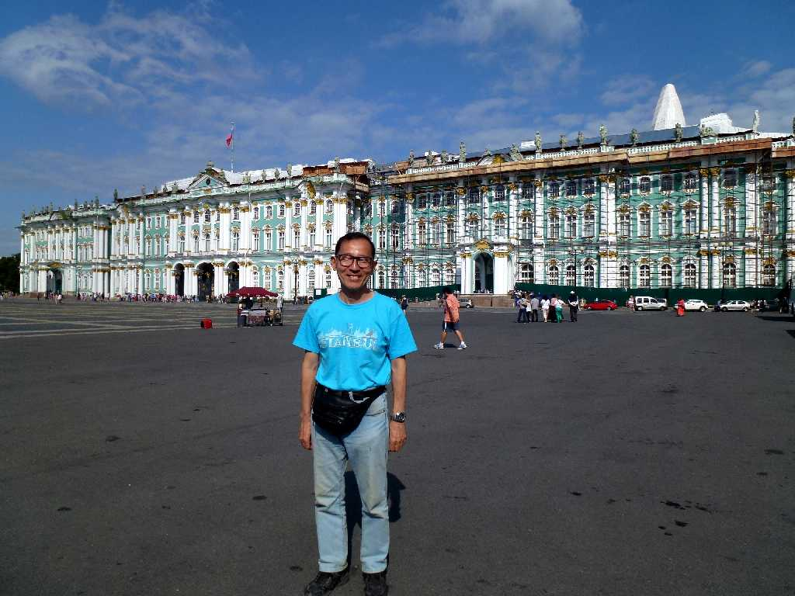
July 12 2013 The State Hermitage Museum
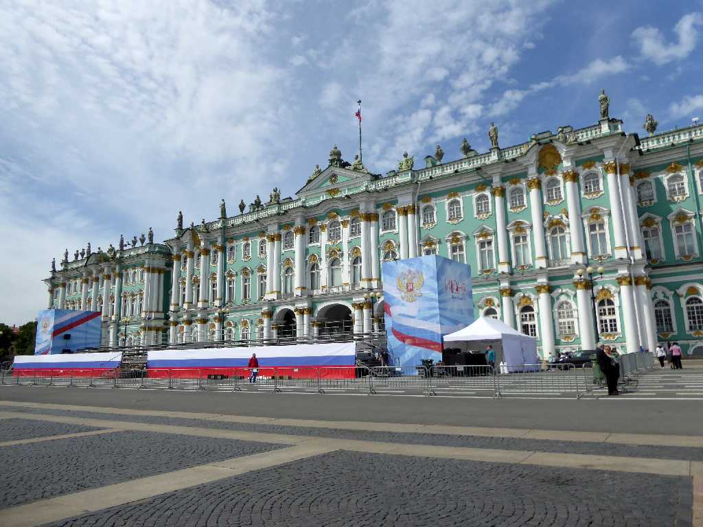
The State Hermitage Museum Sankt Peterburg
８０日間世界一周鉄道の旅で訪問以来４年ぶりの再訪問
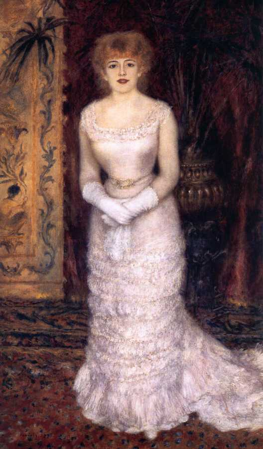 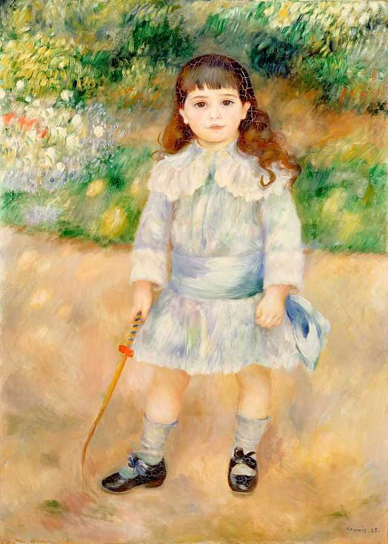
Renoir - Jeanna Samary 1871 Child with a Whip 1909
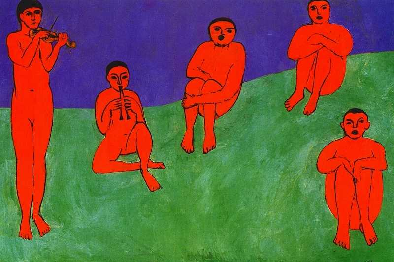 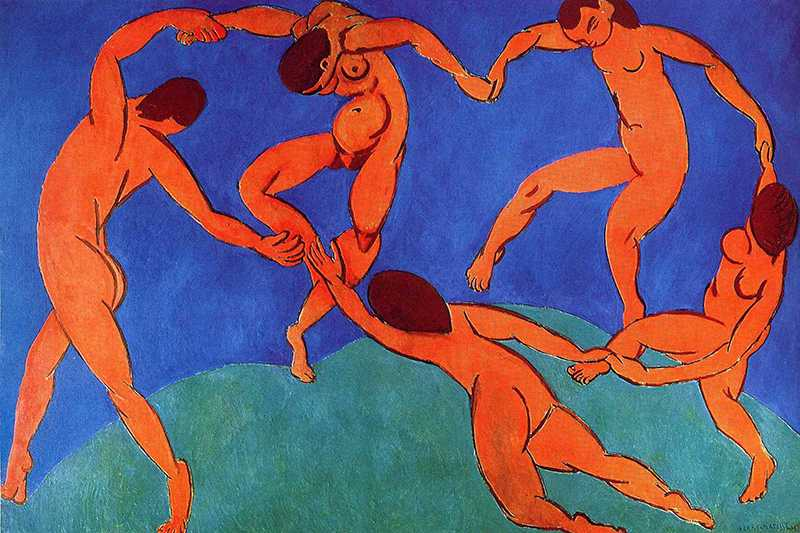
Matisse - Music 1910 Dance 1910
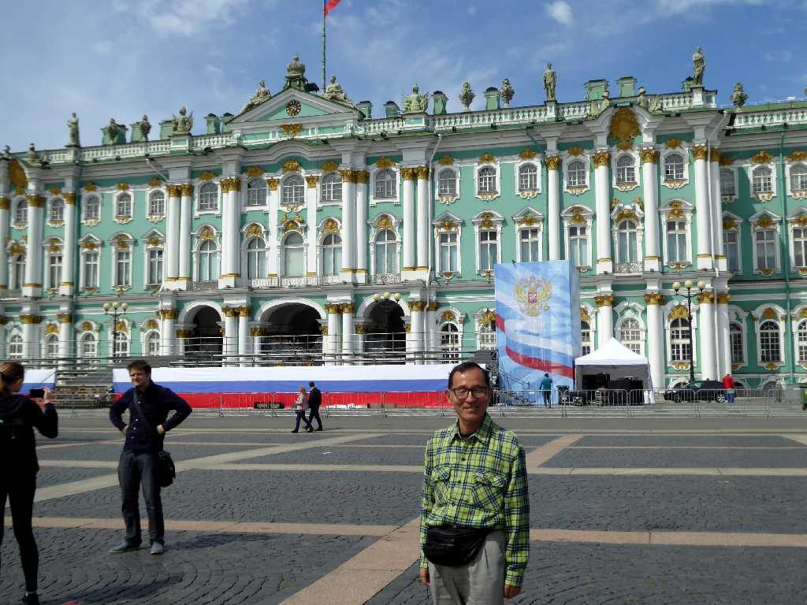
June 11 2017 The State Hermitage Museum